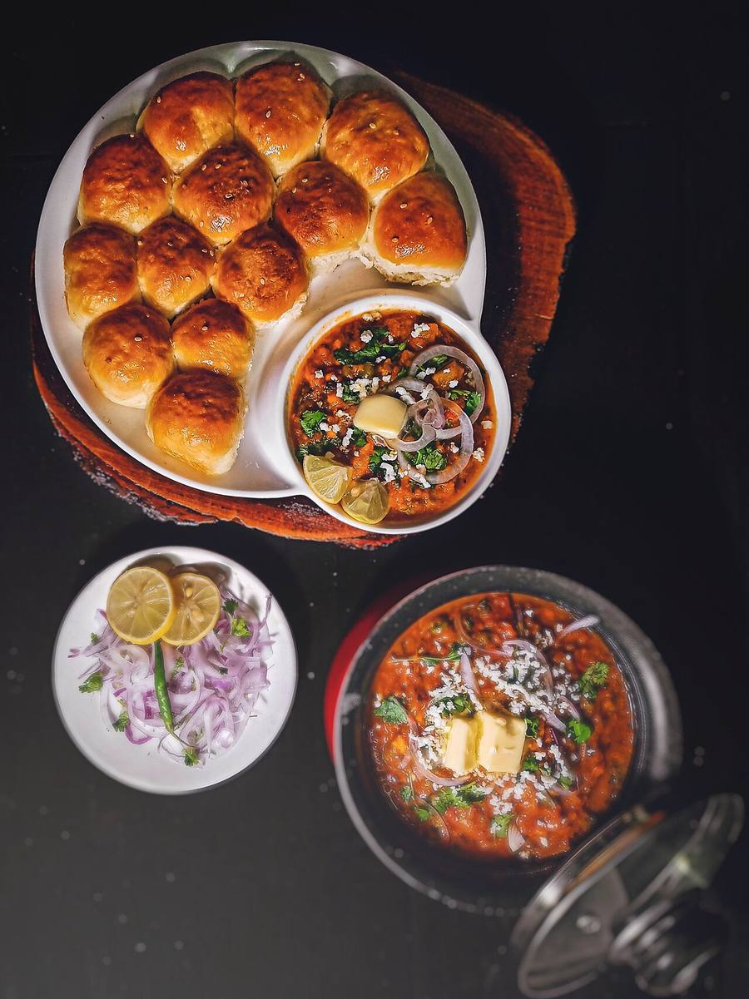

West India
Maharashtrian Cuisine
A coastal tradition and a plateau tradition, sharing one state, plus the street food that fed Mumbai's mill workers.
A coastal tradition and a plateau tradition, sharing one state, plus the street food that fed Mumbai's mill workers.
Maharashtra's cuisine splits into two distinct traditions along geographic lines. Along the Konkan coast, the food looks a lot like its coastal neighbors Goa and Kerala: rice, coconut, and seafood, cooked with kokum (a tart dried fruit) for sourness. Inland, on the drier Deccan plateau, the cuisine runs on millets (jowar and bajra), peanuts and sesame, and famously dry, intensely spiced curries. Kolhapuri cuisine, from the southern Deccan, has a reputation as one of the spiciest regional styles in India.
Maharashtra's political identity is inseparable from the Maratha Empire, built under Chhatrapati Shivaji in the 17th century and expanding into one of the dominant powers in India by the 18th. Foods tied to military campaigns had to be practical, portable, and high in energy. Dry chutneys, spice mixes like goda masala and kanda-lasun masala, and preserved pickles all fit that need. They stayed in everyday cooking long after the campaigns ended.
This region's most-told food story comes with a date attached. Vada pav, a spiced potato fritter in a bread roll, is credited to a street vendor named Ashok Vaidya, who began selling it near Dadar railway station in 1966. It was explicitly designed as a cheap, fast, filling meal for Mumbai's textile mill workers, at a time when Western-style sandwiches were priced out of reach for that same crowd. Indian food history rarely offers a dish with a named inventor, a named street corner, and a year attached to it. Vada pav went on to become Mumbai's defining street food.


 Alu Vadi
Alu Vadi
 Amti
Amti
 Batata Bhaji
Batata Bhaji
 Bharli Vangi
Bharli Vangi
 Bhel Puri
Bhel Puri
 Bombil Fry
Bombil Fry
 Dadpe Pohe
Dadpe Pohe
 Dahi Puri
Dahi Puri
 Hirvi Mirchi Cha Thecha
Hirvi Mirchi Cha Thecha
 Jowar Bhakri
Jowar Bhakri
 Kanda Poha
Kanda Poha
 Katachi Amti
Katachi Amti
 Kolambi Bhaat
Kolambi Bhaat
 Kolhapuri Chicken Rassa
Kolhapuri Chicken Rassa
 Kothimbir Vadi
Kothimbir Vadi
 Maharashtrian Basundi
Maharashtrian Basundi
 Masale Bhat
Masale Bhat
 Matki Usal
Misal Pav
Matki Usal
Misal Pav
 Pani Puri / Golgappa
Pani Puri / Golgappa
 Patodi Rassa
Patodi Rassa

Pav Bhaji Pithla
Pithla
 Puran Poli
Puran Poli
 Ragda Pattice
Ragda Pattice
 Sabudana Khichdi
Sabudana Khichdi
 Sabudana Vada
Sabudana Vada
 Saoji Mutton
Saoji Mutton
 Sev Puri
Sev Puri
 Sol Kadhi
Sol Kadhi
 Thalipeeth
Ukadiche Modak
Vada Pav
Thalipeeth
Ukadiche Modak
Vada Pav
 Varan Bhaat
Varan Bhaat
 Zunka
Zunka
Not cooking tonight?
Leave the box empty and it uses your device location. Nothing is stored here. Prefer Apple Maps?
Tell us what is in your kitchen, and Khaana will help you cook an authentic Indian meal.